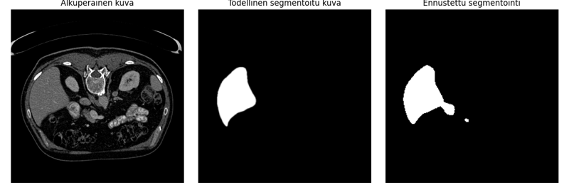

Malli 7
Mallin mIoU & mPA:
mIoU (Mean Intersection over Union):
0.8059
mPA (Mean Pixel Accuracy):
0.9800
Hyperparametrit:
Koulutuskierrokset (Epochs):
25
Oppimisnopeus (Learning Rate):
0.0001
Eräkoko (Batch Size):
16
Poisjättöprosentti (Dropout Rate)
0.2
Optimointialgoritmi (Optimizer):
Adam
Kuvat:
Segmentointikuva: 012
Segmentointikuva: 015
Segmentointikuva: 016
